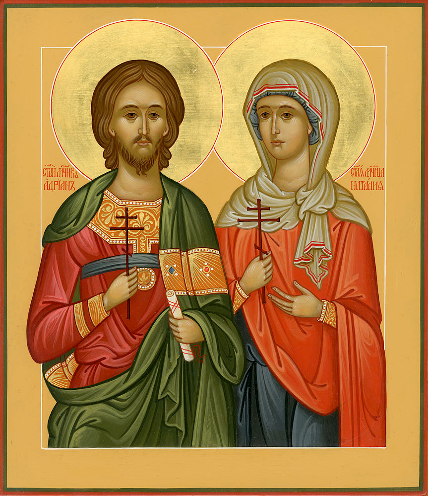

Житие Святых Мучеников
Адриана и Наталии Мученики Адриан и Наталия вступили в брак молодыми, всего за один год до страданий. Они жили в Никомидии Вифинской при императоре Максимиане (305-311). Начав гонение, он обещал награды тем, кто будет указывать христиан и приводить их на суд. Начались доносы, и по одному из них были взяты 23 христианина, скрывавшихся в пещере близ Никомидии. Их мучили, принуждали поклониться идолам, а потом привели в судебную палату, чтобы записать их имена и ответы. Начальник судебной палаты Адриан, наблюдая, с каким мужеством переносят люди страдания за веру, как твердо и неустрашимо исповедуют Христа, спросил: «Какой награды ожидаете вы от своего Бога за мучения?» Мученики отвечали: «Такой награды, какой мы не можем описать, а ум твой не может постигнуть». Воодушевившись, святой Адриан сказал писцам: «Запишите и меня, так как и я христианин и с радостью умру за Христа Бога». Писцы донесли об этом императору, который призвал святого Адриана и спросил: «Неужели и ты обезумел и хочешь погибнуть? Пойди, вычеркни свое имя из списков и принеси жертву богам, прося у них прощения». Святой Адриан отвечал: «Я не обезумел, а обратился к здравому разуму». Тогда Максимиан приказал посадить Адриана в темницу. Его жена, святая Наталия, узнав, что муж страдает за Христа, обрадовалась, потому что сама была тайной христианкой. Она поспешила в темницу и укрепляла мужа, говоря: «Блажен ты, господин мой, что уверовал во Христа, ты приобрел великое сокровище. Не жалей ничего земного, ни красоты, ни молодости (Адриану тогда было всего 28 лет), ни богатства. Все земное — прах и тлен. Богу же угодны только вера и добрые дела». За поруку других мучеников святого Адриана отпустили з темницы сообщить супруге о дне казни. Святая Наталия подумала, что о н отрекся от Христа и его отпустили на свободу, и не хотела впускать его домой. Святой убедил жену, что он не бежал от мучений, а пришел известить ее о дне своей кончины.
Святого Адриана жестоко мучили. Император советовал святому пожалеть себя и призвать богов, но мученик отвечал: «Пусть твои боги скажут, какое благодеяние они мне обещают, и тогда я поклонюсь им, а если они не могут говорить, то зачем я буду им кланяться?» Святая Наталия не переставала укреплять мужа. Она просила его принести за нее первую молитву Богу, чтобы ее не принудили выйти замуж за язычника после его смерти. Мучитель приказал отбить святым руки и ноги на наковальне. Святая Наталия, опасаясь, чтобы муж, видя страдания других мучеников, не поколебался, просила мучителей начать казнь с него и сама помогала класть его руки и ноги на наковальню. Тела мучеников хотели сжечь, но поднялась сильная гроза, и печь погасла. Многие палачи были убиты молнией. Святая Наталия взяла себе руку своего супруга и хранила в доме. Вскоре тысяченачальник армии просил у императора разрешения жениться на святой Наталии, которая была молода и богата. Но она скрылась в Византию. Здесь ей явился во сне святой Адриан и сказал, что она будет скоро упокоена Господом. Бескровная мученица, изнуренная страданиями, действительно вскоре преставилась к Богу.